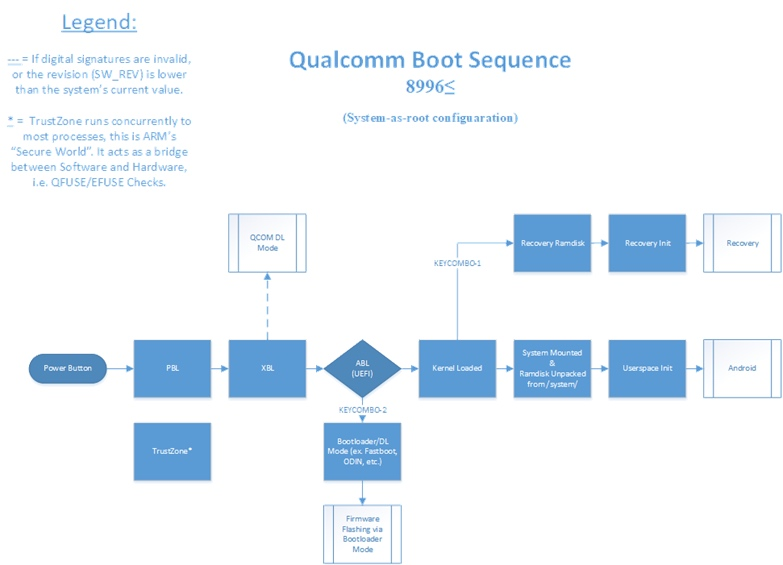
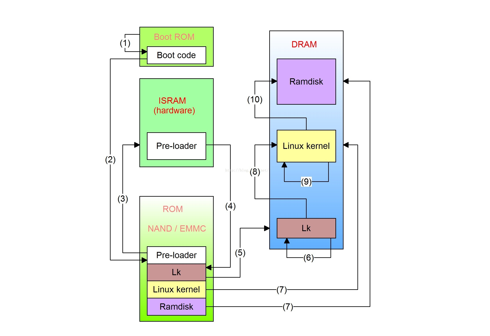

当我们谈论解锁 BootLoader 时，我们在谈论什么？
有过刷机经验或者曾经尝试过刷机的童鞋，一定听说过「解锁」这个词。这里的「解锁」全称应该是「解锁 BootLoader」或者简称为「解 BL 锁」。与通过人脸识别或者指纹、数字图案解锁手机屏幕的那种「屏幕解锁」不同，这里的「解锁」完全是另外一个概念。直观来说，解 BL 锁是刷机的前提条件。通常情况下，一旦某个设备无法解锁 BL，基本上就无法在这个设备进行刷机了。
那么，一定会有童鞋关心，解锁 BootLoader 到底意味着什么？为什么它会有限制？我们能绕过限制强制解锁吗？今天，我就尝试来回答一下这几个问题。
在搞清楚解锁 BootLoader 之前，我们必须先搞清楚什么是 BootLoader：
A bootloader is software that is responsible for booting a computer.
维基百科上的介绍言简意赅：Bootloader 是负责启动计算机的软件。计算机开机的时候，会执行一个相对较小的程序来初始化内存、外设等启动后续操作系统必备的资源，并最终启动用户所使用的操作系统（如 Windows, Android 等）；这个程序就是 BootLoader。
我们知道，操作系统负责管理设备的硬件资源；而 BootLoader 是用来启动操作系统的，如果有人通过 BootLoader 来启动一个恶意的操作系统，那我们设备的安全性就无法得到保障了。因此，BootLoader 一个核心的功能就是，确保启动一个可信的操作系统。另外，当设备的操作系统出现问题时，BootLoader 还可以引导启动另外一个正常的可信系统来执行恢复；所以，BootLoader 另外一个功能重要功能就是恢复系统。
具体来说，BootLoader 是如何实现这两大功能的呢？以高通设备为例，我们看一下 BootLoader 的启动流程：

当我们按下电源键启动手机的时候，CPU 上电之后开始运行；它最开始运行的代码是 CPU 芯片厂商提供的，写死在某个只读存储上，这段代码一旦出厂便不可更改，我们通常称之为 BootROM 或者 PBL (Primary Boot Loader)；PBL 的主要功能是上电自检并启动下一个组件 SBL(Secondary Boot Loader），现在被叫做 XBL (eXtended Boot Loader)。这个 SBL 主要是初始化一些硬件环境(如DDR, clocks 和 USB 等）和代码安全环境 (TrustZone)，当然，最重要的还是验证并加载下一个组件——ABL(Android Boot Loader，也叫 aboot)。与 PBL 不同，SBL 程序一般存放在 eMMC 上，这个地方是可以被修改的，因此它可以被刷写和升级。正因如此，SBL 还承载着最底层的恢复设备的重任；我们常说的高通 9008 模式（全称 Emergency Download Mode）就运行在这里。9008 模式，本质上就是强制刷写设备的 eMMC 存储，因此不论你上层操作系统或者应用软件被破坏成什么样，除非硬件损坏，基本上都可以救回来。
有童鞋会问，为啥要整个 SBL，直接 PBL 一把干完不行吗？实际上，PBL 是芯片相关的，芯片无法预知到它用什么外设，因此这两个阶段被解耦了。
话说回来，SBL 执行完之后会验证并加载 ABL，ABL 的主要功能是从设备验证并加载 bootimg 然后启动 Linux Kernel 进而启动用户操作系统，根据选择的不同，可能会进入到 Android 系统或者 Recovery 模式。ABL 还有一个很重要的功能，它提供了一个 fastboot 协议，用户可以用 PC 通过 USB 连接设备，通过这个 fastboot 协议控制设备；我们通常所说的「线刷」，小米的兔子界面以及我们通过命令行工具 fastboot 刷机实际上就是运行在 ABL 下。正因 ABL 功能比较复杂，它内部其实运行着一个 mini 的操作系统，这个操作系统就是 lk(Little Kernel)，顺带一提，Trusty TEE 可信执行环境下的操作系统以及 Google 新的 Fuchsia 的微内核 Zircon 也是基于 lk 的。
ABL 启动 Linux Kernel 之后，内核最终会进入用户态执行 init，init 进而启动 ueventd, watchdogd, surfaceflinger 以及 zygote 等；zygote 启动之后 fork system_server 并启动各种 binder 服务，系统核心 binder 服务启动之后会启动 Launcher 桌面，这样整个系统就启动完毕了。联发科的设备 BootLoader 启动过程类似：

从上述 BootLoader 启动过程，我们可以很清楚地知道，BootLoader 的恢复功能体现在 SBL 阶段的恢复模式以及 ABL 阶段的 fastboot 线刷模式。实际上，在我们手机底层软件出现问题之后，不论是自己救砖还是去售后，基本都是用的这两种模式。在搞清楚了 BootLoader 的恢复功能之后，那在安全性方面，它又是如何保障的呢？
细心的童鞋可能会注意到，上面我们多次提到了验证并加载。BootLoader 的各个启动过程串起来就是一个启动链，这个启动链的各个阶段在进行过渡和跳转的时候是需要进行验证的。也就是说，上一阶段在启动下一阶段的时候，会验证下一阶段的代码是否可信；只有在验证通过的情况下，整个启动过程才会继续进行。这就好比接力赛跑，在上一个选手把接力棒传递到下一个选手之前，他得先搞清楚是不是把接力棒交到了正确的伙伴手里；在现实世界中，这是通过五官和记忆来判断的；在计算里面，这个验证的过程实际上就是比对数字签名。
如果 BootLoader 的每一个阶段都严格验证数字签名，在代码逻辑都正确的情况下，用户是无法通过 BootLoader 去加载一个修改过的第三方系统的（也就是无法刷机）。那么什么是解锁 BootLoader？
解锁 BootLoader 实际上就是让 BootLoader 启动链上某些阶段的签名验证不生效。如果让 BootROM 不验证 SBL，那我们就可以任意加载 XBL 从而接管接下来的操作流程如 TEE，lk, Linux Kernel；如果让 SBL 不验证 ABL，那我们就可以任意加载 ABL 从而接管 lk 和 Linux Kernel；如果让 ABL 不验证 boot.img，我们就可以控制 Linux Kernel。在现实场景中，人们最需要的就是刷入自定义 boot.img，毕竟这是用户能接触到的最上层系统 Android 的一部分。修改 TEE 和 LK 理论上不是不可以，但是修改这部分人们感知不强，并且通常这部分组件并不开源，也让很多人无从下手。因此实际上，我们通常所说的解锁 BootLoader 特指让 ABL(aboot) 在加载 bootimage 时不进行验证。
某些设备厂商提供了解锁功能，实际上就是通过某种方式关闭了 ABL 中对 bootimage 的加载验证。也许有童鞋会想，我们想办法篡改这个签名，那不是就可以解锁了？比如我们可以这样操作：把 bootimage 修改并用自己的签名，然后把 ABL 中存放签名的地方暴力改成我们的签名；这样 ABL 在校验签名的时候就会通过。但问题是，如果我们要修改 ABL 中存放签名的地方，势必要修改 ABL，那么 SBL 在加载 ABL 的时候就会验证签名不通过；这样的话，我们继续修改 SBL，然后把 PBL 中存签名的地方改掉？看起来或许可以。实际上，整个启动链之所以能保障安全，是因为它的信任传递机制——正因为第一个角色可信，第二个角色才可信，并一步步向下传递。如果有办法破坏掉启动链的第一个角色，那就破坏了整个信任链。所以，在 BootLoader 启动过程中，PBL(BootROM) 所持有的签名是所有安全的基石，也即信任根（Root of Trust)。在 BootLoader 中，有两个机制确保信任根受信：
- BootROM 的代码存放在只读存储器中，一旦出厂不可更改。
- 下一阶段的可信数字签名存放在独有的硬件设备之中(eFuse，一次性可编程存储器），一旦写入就会被破坏（三星设备解锁之后会「熔断」指的就是类似特性）。
因此，如果所有的组件都按照理想情况下工作，我们就无法更改 BootROM 所持有的信任根，进而无法破坏启动过程中的信任链，也就无法解锁设备。
当然，一切建立在所有的代码都正常工作的条件下。一旦某个阶段的代码有漏洞，那我们就有希望突破信任链，进而强制解锁设备。
事实上，这种漏洞并非天方夜谭。iOS 上著名的 checkmate 漏洞就是 BootROM 中的代码存在问题，通过这个漏洞人们可以越狱设备，甚至引导另外一个操作系统（比如在 iOS 上运行 Android）。联发科的芯片，也曾经出现过不少 BootROM 漏洞，比如 amonet 和 最近的 kamakiri。21年五月份的安全更新中，CVE-2021-0467 也是一个 BootROM 漏洞。
如果设备提供商偷懒，并没有完整地实现整个安全启动链，那也是可能强制解锁的。比如老的华为设备，其解锁码存放在 proinfo 分区下，这个分区是可以被刷写的；因此你可以拿别的设备的解锁码和 proinfo 分区刷入直接通过验证。还有，曾经的 vivo 对 bootimage 的验证并不严格，用户自定义一个 fastboot 就可以直接解锁。
总体来说，如果想绕过限制强制解锁，基本上只有非常规手段。如果非要搞机，还是去选择一个官方支持解锁的厂商比较靠谱。
不过，对于个人使用的主力机，我是不建议解锁的。上面提到过，解锁实际上是让设备启动过程中的某些安全机制失效；如果你解锁了 BL 的手机丢了或者由于某些原因被别人拿到，别人如果想要拿到你设备里面的数据，相比没有解锁的手机，要容易不止一个数量级。
但愿这篇文章能有所启发，大家周末愉快！